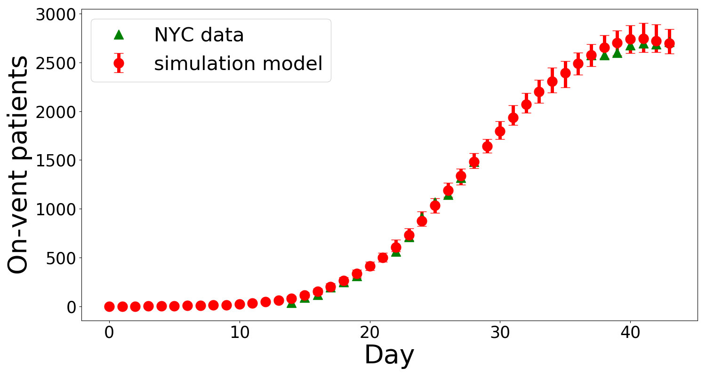
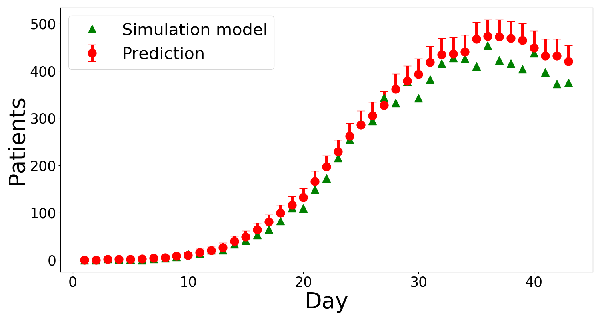
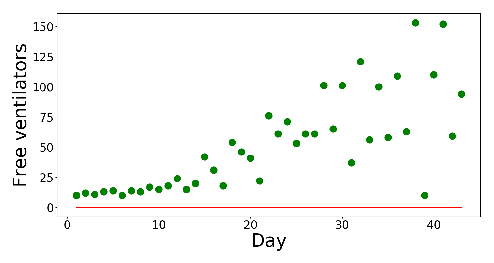

Mechanical ventilation is a major component of vital medical support for COVID-19 patients with severe acute respiratory failure. Many hospitals in the U.S. and other countries have been already experiencing ventilator shortages. Our model provides these hospitals with meaningful predictions to assist them in the dynamic allocation of ventilators from a central stockpile.
We developed an algorithm that predicts the number of Covid-19 patients who will start to require ventilators. This algorithm is intended to be utilized by a large hospital or a group of coordinated hospitals (see documentation (link to be added) for details).
|  | Based on medical reports and articles with information about course of the COVID-19 we create a simulation model that is calibrated with New York City's Covid-19 data. |
|  | We predict the number of new patients who require ventilatory support the next day based on two numbers: (1) number of hospitalized patients not currently ventilated and (2) anticipated number of new hospital admissions on the next day. |
|  | We propose a ventilator ordering and returning policy. In the simulation study under our ventilator order and return policy, no patients were denied of ventilation and there was no excessive inventory of ventilators kept at hospitals. |
Cornell ORIE Covid-19 Projects Coordinator
David Shmoys, Director Center For Data Science For Enterprise and SocietyAlgorithm Design
Jim Dai, Leon C. Welch Professor of Engineering, School of Operations Research and Information EngineeringWeb Implementation
Gloria Ren, Senior, School of Operations Research and Information EngineeringAdditional Sources
covid19.cheme.cornell.edu
covidalliance.com